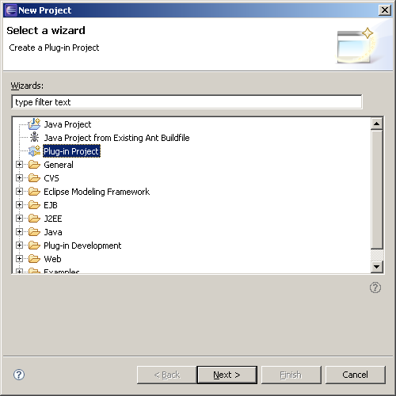
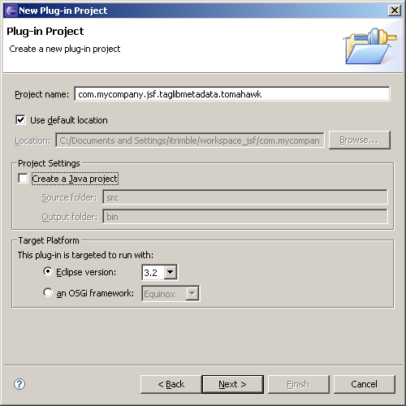
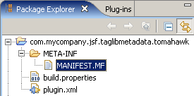
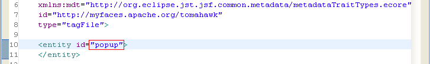

Supplying Tag Library Meta-data for Apache MyFaces Tomahawk |
In this tutorial we will write a plugin that supplies meta-data that will be used when editing a JSF JSP page that uses the tag library for the Apache MyFaces Tomahawk JSF component library. This is part one of a series of tutorials that will build up an example of supplying meta-data for a small set of tags from this tag library. This part will concentrate on providing content assist and validation in the structured source editor, and introduce the design-time meta-data framework.
This tutorial will walk through the process of writing a plugin that provides additional functionality while editing JSF JSP pages that use the tag library for the Apache MyFaces Tomahawk component library. By supplying meta-data for this tag library, code-completion, validation functionality and much of the functionality in the Web Page Editor becomes available for the Tomahawk tags. This plugin will not aim to provide a complete set of meta-data for the library, it will simply lay the groundwork and explain the general concepts.
It is assumed that the user is already familiar with the use of JSP tags and basic editing of JSP pages. It is further assumed that the user is familiar with adding tag libraries to web projects and correctly specifying their use in JSP pages.
First we will need to create a new Plug-in Project in order to extend the necessary extension point to supply your meta-data. Select File > New > Project... to open the New Project dialog, select Plug-in Project and click Next >.
Provide an appropriate value for Project name, uncheck Create a Java project (in this example we do not require this to be a Java project, although a Java project is perfectly valid and in some cases may be desirable) and click Next >.
Provide appropriate values for Plug-in Properties and click Next >.

Uncheck Create a plug-in using one of the templates and click Finish to complete creation of the plug-in project.

In the Package Explorer, double-click MANIFEST.MF to open it in the Plug-in Manifest Editor (if it is not already open as a result of creating the project in the previous step).
In the Plug-in Manifest Editor, select the Dependencies tab and click the Add... button to add org.eclipse.jst.jsf.common as a required plug-in.

In the Plug-in Manifest Editor, select the Extensions tab and click the Add... button to add org.eclipse.jst.jsf.common.standardMetaDataFiles as an extension.

Still in the Plug-in Manifest Editor and on the Extensions tab, right-click org.eclipse.jst.jsf.common.standardMetaDataFiles and select New > standardMetaDataFile. Set the uri to http://myfaces.apache.org/tomahawk and the location to metadata/apache_tomahawk.xml (the value of location is the plugin-relative location of the meta-data file that we will create in a later step and so is arbitrary, while the value of uri must correspond with the tag library's specified URI). For this example, we will not be specifying values for the optional locator property. Save your work and close the Plug-in Manifest Editor if you desire.

Create a new folder and XML file, such that from the plug-in project root you now have the file metadata/apache_tomahawk.xml (which matches the value of location as set in the previous step). Double-click this file to open in the XML editor.

Working in the XML editor, paste the following XML into the metadata/apache_tomahawk.xml file. We now have a minimal, legal (although not particularly useful) meta-data file.
<?xml version="1.0" encoding="UTF-8"?> <md:metadatamodel xmlns:xsi="http://www.w3.org/2001/XMLSchema-instance" xmlns:ecore="http://www.eclipse.org/emf/2002/Ecore" xmlns:md="http://org.eclipse.jst.jsf.common.metadata/metadata.ecore" xmlns:mdt="http://org.eclipse.jst.jsf.common.metadata/metadataTraitTypes.ecore" id="http://myfaces.apache.org/tomahawk" type="tagFile"> </md:metadatamodel>
In this example, we will be providing meta-data for Tomahawk's popup tag. To begin, we need to specify in our meta-data file the name of the tag that we are supplying meta-data. We do this by simply setting the id attribute of the entity element to popup, as seen below.
We continue by specifying properties for the popup tag's attributes. We do this by adding child entity elements to the popup entity. We will start with the displayAtDistanceX and displayAtDistanceY attributes, the values of which must be an integer. This is done by specifying a trait, a property of the entity. The trait that the JSF tool uses to apply validation, and possible values to the structured source editor, is a trait named, "attribute-value-runtime-type". Additional information on this trait can be found in the Meta-data Processing Framework. We specify this by adding the appropriate entity and trait elements to our XML file, as seen below. (The "org.eclipse.jst.jsf.core.attributevalues.IntegerType" runtime type is one of the types pre-defined in the org.eclipse.jst.jsf.core plug-in.)

We continue by specifying appropriate entity and trait elements for the closePopupOnExitingElement and closePopupOnExitingPopup attributes, the values of which at runtime must be boolean, and the default value of each is "true". As seen below, we use the "org.eclipse.jst.jsf.core.attributevalues.BooleanType" runtime type to specify this.

To complete the meta-data for this example, we will address those attributes which may be common to many tags and may have the same meaning no matter which element upon which they are being defined for. Examples are id and binding. A special element called entityGroup can be defined as a child of the metadatamodel element which that can include any number entities and/or traits. Any entity can then reference this entityGroup using an include-entity-group element which will copy the contents of the group to the inclusion point. As seen below, we now do this for the id and binding attributes using pre-defined runtime types and properties.

If the an entity or trait is present with the same id as one in the entityGroup, the entityGroup instance is ignored. This allows for the including entity to override a member of the entityGroup's element.
This plugin can now be packaged and deployed to Eclipse in order to get advanced editing capabilities (e.g. content-assist and validation) for the attributes of the elements of the Tomahawk tag library that we have defined here. Obviously, this example only covers part of the tag library, but hopefully serves as a starting point for interested developers.
For reference, the contents of the completed example metadata/apache_tomahawk.xml file follows.
<?xml version="1.0" encoding="UTF-8"?> <md:metadatamodel xmlns:xsi="http://www.w3.org/2001/XMLSchema-instance" xmlns:ecore="http://www.eclipse.org/emf/2002/Ecore" xmlns:md="http://org.eclipse.jst.jsf.common.metadata/metadata.ecore" xmlns:mdt="http://org.eclipse.jst.jsf.common.metadata/metadataTraitTypes.ecore" id="http://myfaces.apache.org/tomahawk" type="tagFile"> <entity id="popup"> <include-entity-group id="common-attributes"/> <entity id="displayAtDistanceX"> <trait id="attribute-value-runtime-type"> <value> org.eclipse.jst.jsf.core.attributevalues.IntegerType </value> </trait> </entity> <entity id="displayAtDistanceY"> <trait id="attribute-value-runtime-type"> <value> org.eclipse.jst.jsf.core.attributevalues.IntegerType </value> </trait> </entity> <entity id="closePopupOnExitingElement"> <trait id="attribute-value-runtime-type"> <value> org.eclipse.jst.jsf.core.attributevalues.BooleanType </value> </trait> <trait id="default-value"> <value>true</value> </trait> </entity> <entity id="closePopupOnExitingPopup"> <trait id="attribute-value-runtime-type"> <value> org.eclipse.jst.jsf.core.attributevalues.BooleanType </value> </trait> <trait id="default-value"> <value>true</value> </trait> </entity> </entity> <entityGroup id="common-attributes"> <entity id="id"> <trait id="attribute-value-runtime-type"> <value> org.eclipse.jst.jsf.core.attributevalues.ComponentIDType </value> </trait> </entity> <entity id="binding"> <trait id="attribute-value-runtime-type"> <value> org.eclipse.jst.jsf.core.attributevalues.ComponentBindingType </value> </trait> <trait id="runtime-return-type"> <value>javax.faces.component.UIComponent</value> </trait> </entity> </entityGroup> </md:metadatamodel>